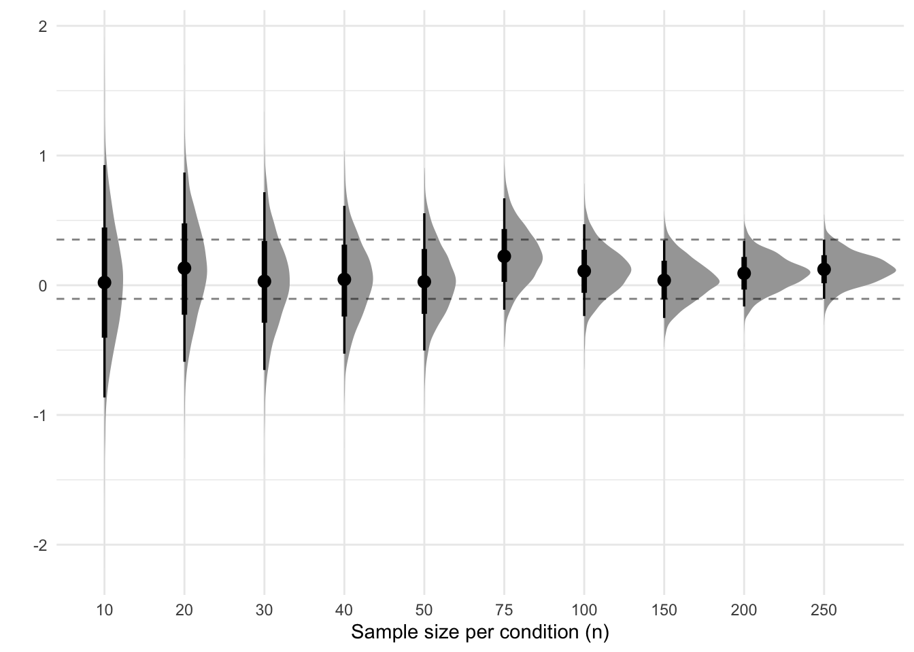
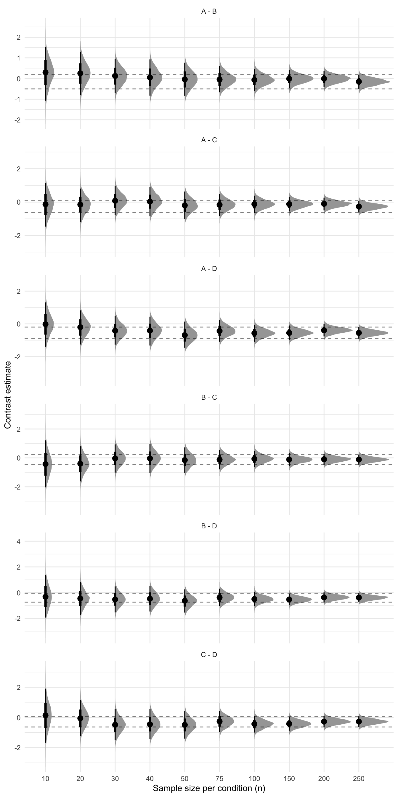

Code
# Load packages
library(MASS)
library(tidyverse)
library(viridis)
library(brms)
library(emmeans)
library(BayesFactor)
library(tidybayes)
# Set the default ggplot theme
theme_set(theme_minimal())
# Set seed
set.seed(1)# Load packages
library(MASS)
library(tidyverse)
library(viridis)
library(brms)
library(emmeans)
library(BayesFactor)
library(tidybayes)
# Set the default ggplot theme
theme_set(theme_minimal())
# Set seed
set.seed(1)This section is about performing sequential analyses.
For this scenario we simulate data from two different groups (say a control group and an experimental group).
# Set the simulation parameters
Ms <- c(0, 0.25)
SDs <- 1
n <- 250
labels <- c("control", "experimental")
# Produce the variance-covariance matrix
Sigma <- matrix(
nrow = length(Ms),
ncol = length(Ms),
data = c(
SDs^2, 0,
0, SDs^2
)
)
# Simulate
m <- mvrnorm(n = n, mu = Ms, Sigma = Sigma, empirical = TRUE)
# Prepare data
colnames(m) <- labels
data <- as_tibble(m)
data <- pivot_longer(
data = data,
cols = everything(),
names_to = "condition",
values_to = "DV"
)
data <- mutate(data, id = 1:n(), .before = condition)There are different Bayesian ways to analyze this data. One can focus on estimation or on Bayes factors.
If estimation is the goal, we run the model (or models) and obtain the posterior distribution of the estimates of interest. Below we run subsequent models with each model using more of the data.
ns <- c(10, 20, 30, 40, 50, 75, 100, 150, 200, 250)
results <- tibble()
for (i in 1:length(ns)) {
# Get the sample size
n <- ns[i]
# Draw a sample of size n
sample <- slice_head(data, n = n)
# If this is the first iteration, run the full brms model
# Else update the model
if (i == 1) {
model <- brm(
formula = DV ~ 0 + Intercept + condition,
data = sample,
family = gaussian(),
prior = c(
set_prior(coef = "Intercept", prior = "normal(0, 1)"),
set_prior(class = "b", prior = "normal(0, 1)"),
set_prior(class = "sigma", prior = "normal(1, 1)")
)
)
} else {
model <- update(model, newdata = sample)
}
# Get the posteriors of the model estimates
draws <- as_draws_df(model)
# Add sample information
draws <- mutate(draws, step = i, n = n)
# Add the draws to the results data frame
results <- bind_rows(
results,
draws
)
}Now we have the draws of the posterior distribution of the model estimates. We can plot these using the following code.
final_quantiles <- results %>%
filter(n == 250) %>%
pull(b_conditionexperimental) %>%
quantile(probs = c(.025, .975))
ggplot(results, aes(x = factor(n), y = b_conditionexperimental)) +
stat_halfeye() +
geom_hline(yintercept = final_quantiles, linetype = "dashed", alpha = .5) +
labs(x = "Sample size per condition (n)", y = "")
Sequential analyses of 2 groups
This is still a work in progress. I have yet to figure out the best way to obtain Bayes factors using the brms package.
Below I use both brms and BayesFactor to calculate Bayes factors for the effect of condition across various sample sizes.
#|
#| cache: true
ns <- c(10, 20, 30, 40, 50, 75, 100, 150, 200, 250)
results <- tibble()
for (i in 1:length(ns)) {
# Get the sample size
n <- ns[i]
# Draw a sample of size n
sample <- slice_head(data, n = n)
# If this is the first iteration, run the full brms model
# Else update the model
if (i == 1) {
model <- brm(
formula = DV ~ 0 + Intercept + condition,
data = sample,
family = gaussian(),
prior = c(
set_prior(coef = "Intercept", prior = "normal(0, 1)"),
set_prior(class = "b", prior = "normal(0, 1)"),
set_prior(class = "sigma", prior = "normal(1, 1)")
),
sample_prior = TRUE
)
} else {
model <- update(model, newdata = sample)
}
# Calculate the BF
BF_brms <- hypothesis(model, "conditionexperimental = 0")
# Also calculate the BF with the testBF() function from BayesFactor
BF_BF <- ttestBF(formula = DV ~ condition, data = as.data.frame(sample))
# Add the information to the bayes factors data frame
results <- bind_rows(
results,
tibble(
step = i,
n = n,
brms = BF_brms$hypothesis$Evid.Ratio,
BayesFactor = extractBF(BF_BF)$bf
)
)
}Next we plot the Bayes factors for each sample size and for each method of calculating the Bayes factor.
results_long <- results %>%
mutate(BayesFactor = 1 / BayesFactor) %>%
pivot_longer(
cols = c(brms, BayesFactor),
names_to = "method",
values_to = "BF"
)
ggplot(
data = results_long,
mapping = aes(x = factor(n), y = BF, linetype = method, group = method)
) +
geom_line() +
labs(
x = "Sample size per condition (n)",
y = expression(BF["10"]),
linetype = "Method"
)Let’s simulate data for a scenario in which we have 4 different between-subjects conditions. The conditions differ from each by a small amount and for simplicity’s sake each condition has a standard deviation of 1.
# Set the simulation parameters
Ms <- c(0, 0.2, 0.4, 0.6)
SDs <- 1
n <- 250
labels <- c("A", "B", "C", "D")
# Produce the variance-covariance matrix
Sigma <- matrix(
nrow = length(Ms),
ncol = length(Ms),
data = c(
SDs^2, 0, 0, 0,
0, SDs^2, 0, 0,
0, 0, SDs^2, 0,
0, 0, 0, SDs^2
)
)
# Simulate
m <- mvrnorm(n = n, mu = Ms, Sigma = Sigma, empirical = TRUE)
# Prepare data
colnames(m) <- labels
data <- as_tibble(m)
data <- pivot_longer(
data = data,
cols = everything(),
names_to = "condition",
values_to = "DV"
)
data <- mutate(data, id = 1:n(), .before = condition)With this data we can run multiple sequential models (like in the 2 groups scenario), except this time we calculate contrasts between all the levels of the condition factor. We again obtain the posteriors of these contrasts and store them so we can plot them afterwards.
ns <- c(10, 20, 30, 40, 50, 75, 100, 150, 200, 250)
results <- tibble()
for (i in 1:length(ns)) {
# Get the sample size
n <- ns[i]
# Draw a sample of size n
sample <- slice_head(data, n = n)
# If this is the first iteration, run the full brms model
# Else update the model
if (i == 1) {
model <- brm(
formula = DV ~ 0 + Intercept + condition,
data = sample,
family = gaussian(),
prior = c(
set_prior(coef = "Intercept", prior = "normal(0, 1)"),
set_prior(class = "b", prior = "normal(0, 1)"),
set_prior(class = "sigma", prior = "normal(1, 1)")
)
)
} else {
model <- update(model, newdata = sample)
}
# Get the estimated marginal means
emmeans <- emmeans(model, specs = pairwise ~ condition)
contrasts <- emmeans$contrasts
# Get draws of the posterior of each contrast
draws <- gather_emmeans_draws(contrasts)
# Add sample information
draws <- mutate(draws, step = i, n = n)
# Add the draws to the results data frame
results <- bind_rows(
results,
draws
)
}Now that we have a data frame that contains the posterior draws of each contrast, we can plot the posteriors as well as some summary statistics (e.g., the median, a 95% interval) for each contrast.
final_quantiles <- results %>%
filter(n == 250) %>%
group_by(contrast) %>%
summarize(
final_lower = quantile(.value, .025),
final_upper = quantile(.value, .975)
) %>%
pivot_longer(cols = -contrast, names_to = "bound", values_to = "value")
ggplot(results, aes(x = factor(n), y = .value)) +
stat_slabinterval() +
geom_hline(
mapping = aes(yintercept = value),
data = final_quantiles,
linetype = "dashed",
alpha = .5
) +
facet_wrap(~contrast, ncol = 1, scales = "free_y") +
labs(x = "Sample size per condition (n)", y = "Contrast estimate") +
scale_color_viridis(option = "mako", discrete = TRUE)
Sequential analysis
Below we run the same models but this time we calculate Bayes factors for each contrast using the hypothesis() function.
ns <- c(10, 20, 30, 40, 50, 75, 100, 150, 200, 250)
results <- tibble()
for (i in 1:length(ns)) {
# Get the sample size
n <- ns[i]
# Draw a sample of size n
sample <- slice_head(data, n = n)
# If this is the first iteration, run the full brms model
# Else update the model
if (i == 1) {
model <- brm(
formula = DV ~ 0 + Intercept + condition,
data = sample,
family = gaussian(),
prior = c(
set_prior(coef = "Intercept", prior = "normal(0, 1)"),
set_prior(class = "b", prior = "normal(0, 1)"),
set_prior(class = "sigma", prior = "normal(1, 1)")
),
sample_prior = TRUE
)
} else {
model <- update(model, newdata = sample)
}
# Get the bayes factors for each contrast
BF_AB <- hypothesis(model, "Intercept = conditionB")
BF_AC <- hypothesis(model, "Intercept = conditionC")
BF_AD <- hypothesis(model, "Intercept = conditionD")
BF_BC <- hypothesis(model, "conditionB = conditionC")
BF_BD <- hypothesis(model, "conditionB = conditionD")
BF_CD <- hypothesis(model, "conditionC = conditionD")
# Create a tibble with the Bayes factors and sample information
bayes_factors <- tibble(
i = i,
n = n,
`A - B` = BF_AB$hypothesis$Evid.Ratio,
`A - C` = BF_AC$hypothesis$Evid.Ratio,
`A - D` = BF_AD$hypothesis$Evid.Ratio,
`B - C` = BF_BC$hypothesis$Evid.Ratio,
`B - D` = BF_BD$hypothesis$Evid.Ratio,
`C - D` = BF_CD$hypothesis$Evid.Ratio
)
# Add the draws to the results data frame
results <- bind_rows(
results,
bayes_factors
)
}Next, we plot the Bayes factors over time, for each contrast.
results_long <- results %>%
pivot_longer(cols = -c(i, n), names_to = "contrast", values_to = "BF") %>%
mutate(BF = if_else(BF < 1, log(BF), BF))
ggplot(data = results_long, mapping = aes(x = factor(n), y = BF, group = 1)) +
geom_line() +
facet_wrap(~contrast) +
labs(
x = "Sample size per condition (n)",
y = expression(BF["10"]),
linetype = "Method"
)